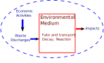
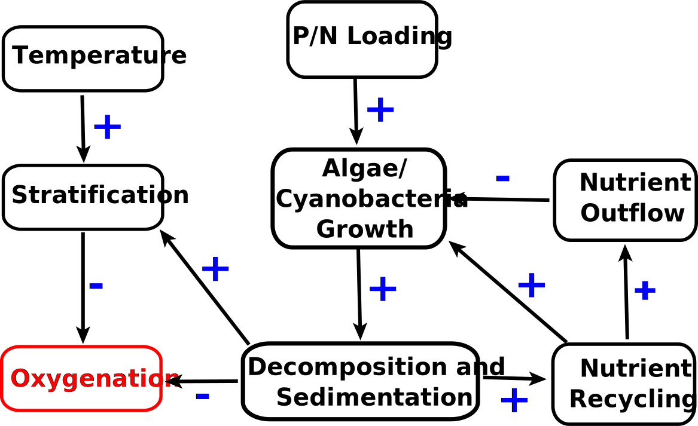

Modeling Example: Lake Eutrophication
Lecture 04
September 9, 2024
Review of Last Class
Systems Analysis
What We Study
- System dynamics;
- Response to inputs;
- Alternatives for management or design.
Needs
- Definition of the system
- System model
What Do We Need To Define A System?
- Components: relevant processes, agents, etc
- Interconnections: relationships between system components
- Control volume: unit of the system we are trying to model and/or manage
- Inputs: control policies and/or external forcings
- Outputs: measured quantities of interest
Mathematical Models of Systems

Conceptual Model of a System
Environmental Systems

- Municipal sewage into lakes, rivers, etc.
- Power plant emissions into air
- Solid waste placed on landfill
- CO2 into atmosphere
Other Aspects of Models
- Deterministic vs. Stochastic
- Descriptive vs. Prescriptive
- Mechanistic vs. Statistical
“All Models Are Wrong, But Some Are Useful”
…all models are approximations. Essentially, all models are wrong, but some are useful. However, the approximate nature of the model must always be borne in mind….
— Box & Draper, Empirical Model Building and Response Surfaces, 1987
Questions?

Text: VSRIKRISH to 22333
Lake Eutrophication Overview
What is Eutrophication?
Eutrophication: common environmental problem in which plants and algae feed on excess nutrients and become overabundant.

Source: Ithaca Journal
Effects of Lake Eutrophication
- hypoxia (reduction in oxygen from the decomposition of organic matter), leading to “dead zones”;
- acidification(from the CO2 produced by decomposition);
- reduced sunlight (from an accumulation of surface algae);
- clogged water intakes; and
- reduction in recreational value and drinking water quality.
Lake Eutrophication Dynamics
Schematic of processes resulting in lake eutrophication
Lake Eutrophication Causes
Excess N and P can come from:
- point sources (such as industrial/sewage processes); and/or
- non-point sources (such as agricultural runoff).
Excess nutrients are stored in sediment and recycled back into the lake, as well as transported by organisms/consumers.
Non-Point Source Pollution
Non-Point Source (NPS) Pollution: Intermittent, distributed waste input to surface or groundwater
Types of NPS Pollution
- Excess fertilizers, herbicides, insecticides (ag runoff)
- Oil, grease, chemicals (urban runoff, energy production)
- Sediment from constructions sites, crop/forest land, eroding streambanks
- Salts from irrigation and acid drainage
- Bacteria and nutrients (livestock, pet wastes, septic systems)
- Atmospheric deposition
NPS Pollution Flows

Flows of Surface Water Contamination
Source: American Water
Management of Eutrophication
It can be difficult to restore to oligotrophic state:
- Reduce N and P going forward to reduce pressure;
- Remove and treat sediment/water;
- Biofiltration.
Restoration takes a long time and is not guaranteed (hysteresis)!
Eutrophication Modeling Example
Watershed As Environmental System
Conceptual Model of an Environmental System
Watershed/Lake Systems Diagram

Conceptual Model of an Environmental System
Watershed/Lake Systems Diagram
Conceptual Model of an Environmental System
- \(V = 600 \times 10^6\ m^3\)
- \(A = 30 \times 10^6\ m^2\)
- \(Q_\text{in} = Q_\text{out} = 400 \times 10^6\ m^3/yr\)
Information Needs
- What will happen to the waste in the environment (fate & transport)?
- What are potential impacts and acceptable levels or critical thresholds?
- What are options to manage the waste?
Fate & Transport
Common Approach: Mass-Balance
\[\frac{\partial\text{Mass}}{\partial t} = \text{Inputs} - \text{Outputs} - \text{Decay}\]
Fate & Transport
Assuming steady-state and decay is linear w.r.t mass:
\[\begin{align*} \frac{\partial\text{Mass}}{\partial t} &= \text{Inputs} - \text{Outputs} - \text{Decay} = 0 \\ \frac{\partial(CV)}{\partial t} &= \sum_j PS_j + \sum_i NPS_i - CQ_\text{out} - \alpha CV = 0 \end{align*}\]
Fate & Transport
\[ \begin{gather*} \sum_j PS_j + \sum_i NPS_i - CQ_\text{out} - \alpha CV = 0 \\ \Rightarrow \qquad C(Q_\text{out} + \alpha V) = \sum_j PS_j + \sum_i NPS_i \\ \Rightarrow \qquad \bbox[5pt, border: 5px solid red]{C = \frac{\sum_j PS_j + \sum_i NPS_i}{Q_\text{out} + \alpha V}} \end{gather*} \]
Other Ways To Write
\[ \begin{align*} C &= \frac{\sum_i P_i/V}{Q/V + \alpha} \\[0.75em] &= \frac{\sum_i P_i/V}{\tau_w^{-1} + \alpha} \\[0.75em] &= \frac{\sum_i P_i/V}{\sum_j k_j} \end{align*} \]
F&T Model Assumptions
What does this model assume?
- Steady-state (\(\partial\text{Mass} / \partial t = 0\))
- 1st order (linear) decay
- Lake is:
- Well-mixed
- Constant volume
Environmental Impacts
What are potential impacts and acceptable levels or critical thresholds?
Generally need to limit average P concentrations to \(< 0.01-0.02\) mg/L.
Incorporating Threshold
\[\begin{align*} C = \frac{\sum_j PS_j + \sum_i NPS_i}{Q_\text{out} + \alpha V} &\leq \left(0.01\ \text{mg/L}\right)\left(\frac{1\ \text{mg/L}}{1000\ \text{kg/m}^3}\right) \\[0.5em] \Rightarrow \qquad \sum_j PS_j + \sum_i NPS_i &\leq \left(1 \times 10^{-5}\right) \left(Q_\text{out} + \alpha V\right) \end{align*}\]
What Is The Decay Rate?
Vollenweider model for lake P sedimentation:
\[\alpha = \frac{10}{\bar{H}} \approx \frac{10A}{V}\]
\[\begin{gather*} \Rightarrow \qquad \sum_j PS_j + \sum_i NPS_i \leq \left(1 \times 10^{-5}\right) \left(Q_\text{out} + 10A\right) \\ \Rightarrow \qquad \sum_j PS_j + \sum_i NPS_i \leq 7000\ \text{kg/yr} \\ \end{gather*}\]
NPS from Watershed Land Use
| Type | Area (ha) | Unit P Load (kg/ha) |
|---|---|---|
| Forest | 20,000 | 0.11 |
| Corn | 1,000 | 2.0 |
| Pasture | 3,000 | 1.0 |
| Residential | 1,000 | 1.2 |
| Business | 200 | 3.0 |
Unit loads taken from Osmond et al. (1997).
NPS from Watershed Land Use
| Type | Area (ha) | Unit P Load (kg/ha) |
|---|---|---|
| Forest | 20,000 | 0.11 |
| Corn | 1,000 | 2.0 |
| Pasture | 3,000 | 1.0 |
| Residential | 1,000 | 1.2 |
| Business | 200 | 3.0 |
\[\sum_i NPS_i = 9000\ \text{kg}\]
Implications…
In other words, the “typical” NPS load is
\[\sum_i NPS_i = 9000\ \text{kg}.\]
This is greater than the acceptable total P load for a target concentration of 0.01 mg/L!
What can we do?
Prescriptive vs. Descriptive Modeling
What we do next depends on whether we’re taking a prescriptive or a descriptive approach.
- Prescriptive: How should we treat PS waste/control NPS load to ensure compliance?
- Descriptive: How will the lake respond to different point and non-point source contributions?
What About Non-Steady State?
\[\sum_j PS_j(t) + \sum_i NPS_i(t) - C(t)Q(t) - \alpha C(t)V = F(t)\]
- More complex, may not be able to solve analytically!
- Need to use numerical simulation methods (next week!)
Key Takeaways
Key Takeaways
- Systems modeling lets us account for influence of multiple inputs, controls, and dynamics
- Mass (or equivalent) Balances as starting points for fate & transport models
- Constraints and thresholds from environmental quality/regulatory standards
- Need to identify prescriptive vs. descriptive use for model
Upcoming Schedule
Next Classes
Wednesday: System Dynamics (Feedbacks/Bifurcations)
Next Week: Simulation Models
Assessments
Homework 2: Released, due 9/19 at 9pm